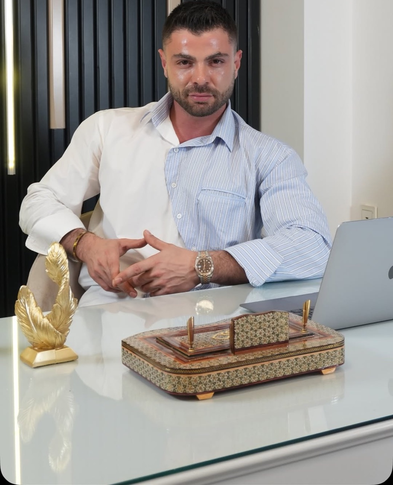
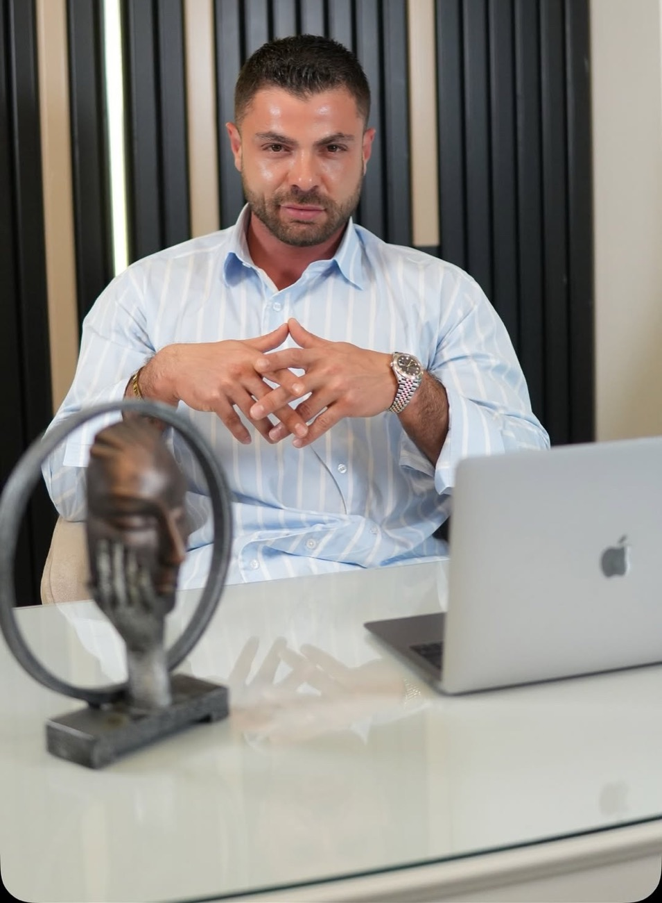

Bu işi doğru yapmak
Medikal estetikte asıl mesele, yapılan işlemin kişiye yakışması. Yaşa uygun, dozunda ve minimal dokunuşlar.

İzmir’den Nişantaşı’na
İzmir doğumluyum. İzmir’in köklü kolejlerinde okudum ve İstanbul Maltepe Üniversitesi Tıp Fakültesi’nden mezun oldum. Mecburi hizmetimi İstanbul’da tamamladıktan sonra medikal estetik hekimi olarak yurt içinde ve yurt dışında sertifika programlarına katılarak eğitim ve belgelerimi tamamladım. Birçok merkezde deneyim kazandıktan sonra İstanbul Nişantaşı’nda kendi muayenehanemi açtım.
Muayenehanemde cerrahi olmayan (non-invaziv) yüz estetiği uygulamaları, mezoterapi, gençlik aşıları, kök hücre ve eksozom gibi uygulamalar yapıyorum.


Eğitim ve deneyim
- Köken
İzmir
İzmir doğumlu; İzmir’in köklü kolejlerinde eğitim aldı.
- Tıp eğitimi
Maltepe Üniversitesi Tıp Fakültesi
İstanbul Maltepe Üniversitesi Tıp Fakültesi’nden mezun oldu.
- Mecburi hizmet
İstanbul
Mecburi hizmetini İstanbul’da tamamladı.
- Medikal estetik
Yurt içi ve yurt dışı sertifikalar
Medikal estetik alanında yurt içinde ve yurt dışında sertifika programlarına katılarak eğitimlerini tamamladı.
- Deneyim
Farklı merkezlerde
Birçok merkezde deneyim kazandı.
- Bugün
Nişantaşı muayenehanesi
Nişantaşı’ndaki muayenehanesinde cerrahi olmayan medikal estetik uygulamaları yapıyor.
Bence herkes yaşına uygun, dozunda minimal dokunuşları hak ediyor.Dr. Fırat Küçüktürkmen
Neler yapıyorum?
Dolgu Uygulamaları
Hacim kaybını dengeleyen, yüz hatlarını belirginleştiren cerrahisiz dokunuşlar.
- Dudak Dolgusu
- Elmacık Dolgusu
- Göz Altı Işık Dolgusu
- Şakak Dolgusu
- Nazolabial Dolgu
Botoks Uygulamaları
Mimik çizgileri, çene kası ve aşırı terleme için kişiye özel doz planlaması.
- Üst Yüz Botoksu
- Masseter Botoks (Çene Botoksu)
- Gummy Smile Botoksu
- Terleme Botoksu
Mezoterapi
Cildin ihtiyaç duyduğu içeriklerin doğrudan hedef bölgeye ulaştırılması.
- Mezoterapi
- Yüz Mezoterapisi
- Göz Altı Mezoterapisi
- Dekolte Mezoterapisi
- Somon DNA
Cilt Gençleştirme
Sıvı yüz germe, Endolift ve gençlik aşısıyla daha sıkı ve canlı bir görünüm.
- Sıvı Yüz Germe
- Endolift Uygulaması
- Gençlik Aşısı
Muayene için randevu oluşturun
Size en uygun uygulamayı muayene sonrasında, yüz anatomiziniz ve beklentileriniz doğrultusunda birlikte planlayalım.